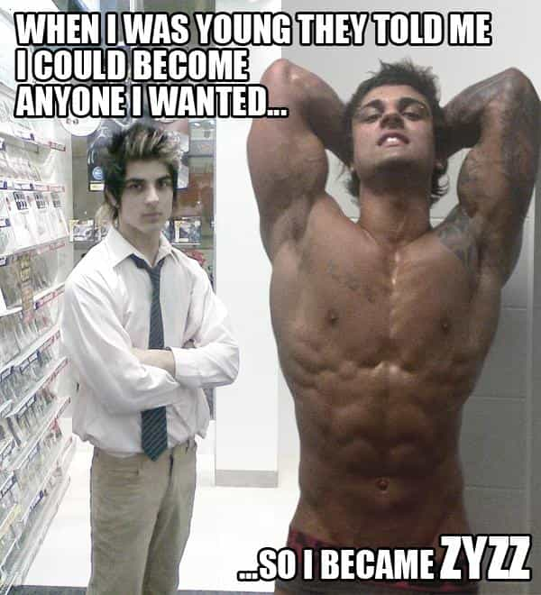

There is no figure more polarizing in the eyes of young men today than deceased bodybuilder Aziz Shavershian. A tall and originally very skinny ectomorph, Aziz began posting videos on Youtube in 2007 documenting his transformation from scrawny teenager to shredded sensation. Zyzz attracted a cult following on the internet, particularly among male, teenage Australian gymgoers, who sought to emulate not only his physique, but the success with women produced by both his body and internet fame.
On one hand, Zyzz single-handedly made bodybuilding popular again among teenage boys, which is no mean feat in a culture where brazen displays of masculinity are stigmatized by the feminist establishment. Thanks to Zyzz, today’s young men are much open to the idea of “getting shredded” than their older counterparts, offering hope that masculinity is not on it’s way to being dead and buried in the 21st century English speaking world.

I can safely say that my motivation to train goes far beyond that of merely impressing people, it is derived from the feeling of having set goals and achieving them and outdoing myself in the gym.
Thanks to Zyzz, hordes of young men have embarked on a journey of mastery and embraced positive masculinity while men such as Roosh chose to pursue the journey of game and men like Tim Ferris pursued entrepreneurship. Just like improving your game or building a business, body building encourages young men to better themselves and gain satisfaction from the goals they have achieved through sheer effort and persistence over an extended period of time, allowing those who take it to truly become Men.
While Zyzz should be commended, his fame is not without controversy. It is almost certain that Zyzz’s aesthetics were the result of heavy steroid and Human Growth Hormone (HGH) usage. On top of the questionable circumstances of his death (a heart attack in a Bangkok sauna at the age of 22), his elder brother “Chestbrah” was arrested for possession of steroids in 2011 and photos circulated on the internet depicting Zyzz being injected in the butt. Nobody is fooled that it was a flu shot. I know a guy who started taking steroids at a very young age during the peak of Zyzz’s fame in the months following his death. How many other young men have started taking steroids and put their health in jeopardy due to Zyzz’s own bad example?
U mirin’ brah?
Zyzz owed his success to pumping his body full of dangerous substances, and used his steroid-fuelled physique to work part-time as a male stripper. Zyzz not only “cheated” on his journey, but engaged in the most degrading and anti-masculine profession there is: being a rent-boy. While Zyzz no doubt enjoyed the fruits of his fame before his sudden death, his fleeting internet fame and lifestyle choices should not be taken as an example to follow by today’s young men.
While Zyzz enjoyed a few years of unlimited access to young, tight women and no doubt had a blast with his crew before he died, he was never able to build any significant wealth from his an internet fame that will quickly be forgotten. Young men should follow Zyzz’s example in regards to starting on their own journey of mastery whether it be game or business or weight lifting, but they should also learn from his mistakes and avoid taking perilous and unsustainable shortcuts.
Do not take the easy road. Do not let yourself down. Build your success the right away so you can enjoy the satisfaction brought to you by achieving your goals through hard work and sheer persistence. That’s what I’ve learned from Zzyz.
Read More: How To Workout Correctly
{kind=link}